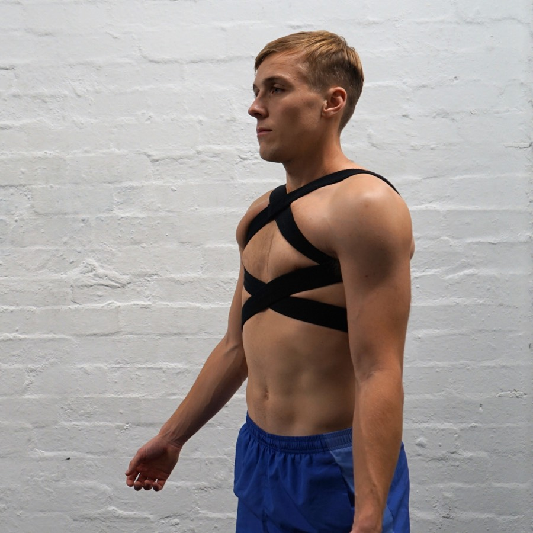
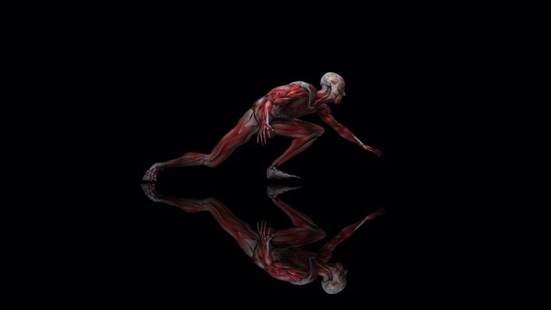
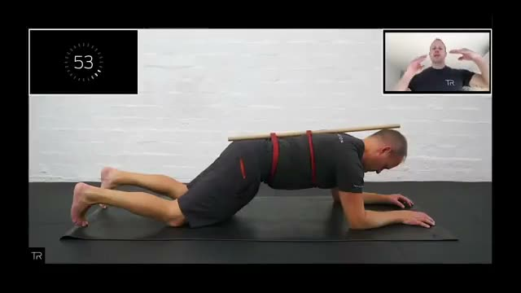

Three design directions for a new totalreformation.com, plus a working concept of a TR client app where clients see their sessions and watch Darren demonstrate every exercise. It's all built from TR's own photos, words and videos.
Same content and structure, three personalities. Tap one to explore; use the bar at the bottom to switch.

Light, editorial, evidence-led. Posture-analysis overlays and a clear four-step method. It reads as the expert biomechanics studio.

Bold, athletic, high-contrast. It keeps TR's dark identity and anatomy art but makes it modern, fast and confident, with the app front and centre.
Starts where clients start: their pain. Tap a body area to see what's often behind it, how TR would work on it, and Darren's video. Then two taps to the right session.

Log in, see your next session, open Darren's plan, tap an exercise and his video plays. Switch to "Darren's view" to assign an exercise and watch it land on the client's phone.
Archived: the earlier "Warm studio" version of C.
Today's site has 35+ pages, including duplicates and thin pages. The new structure brings it down to seven clear destinations. Red marks new pages.
The current site runs on Wix with Bookings, Members, Pricing Plans, Online Programs and Store. Wix now offers headless access, so a new website and a TR app can share the same bookings, member logins and plans. Clients log in once, and calendars stay in sync without migrating data.
| Piece | Proposal | Why |
|---|---|---|
| Website | New custom front end, with Wix kept as the engine (bookings, members, payments) | Full design freedom without losing existing clients, packs or history |
| Client app | One iPhone + Android app (React Native / Expo) | Same login as the website; sessions pulled live from bookings |
| Exercise videos | Darren films each exercise once and it's streamed from a video CDN | Instant start on mobile; roughly 200 clips cost a few dollars a month to stream |
| Session plans | Darren picks exercises per client per session from his library | Shows on the client's phone instantly (see the app's "Darren's view") |
Concept only. Prices, bookings and client data shown here are illustrative, and nothing on this page is connected to the live site.